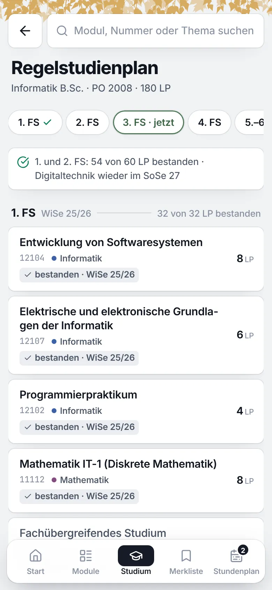
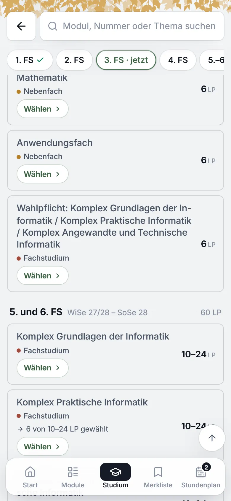
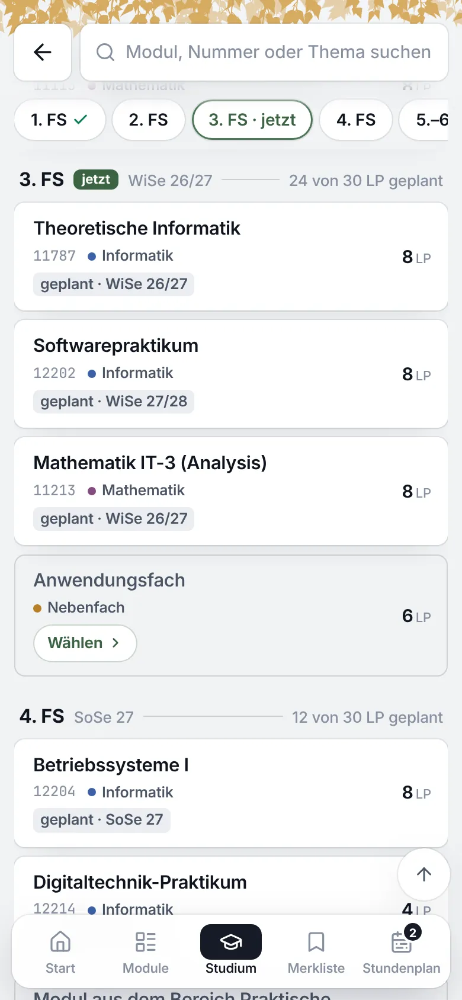

Folia · Mein Studium · Regelstudienplan am Handy · 18. November 2026 · gelesen in Folia 1.100.0 · entschieden: A, gebaut in Folia 1.102.0
Heute sieht man am Handy schwer, welches Modul in welches Semester gehört, und die Karten sind unruhig. Hier sind drei Konzepte. Alle drei haben dieselben ruhigen Zeilen, aber jedes beantwortet die Frage „Welches Semester ist das?“ anders: A gibt jedem Semester einen Kasten, dessen Kopf beim Scrollen oben stehen bleibt. B legt das Studium auf eine Linie, die Semester sind ihre Halte. C zeigt oben den ganzen Plan als Raster und darunter immer genau ein Semester. Jedes ist ein Handy zum Anklicken, mit deinem Studiengang und einem Beispielstudium.
Entschieden: A. „Ja Option a ist super! Setz das bitte um“ — du, am selben Tag. Gebaut in Folia 1.102.0 mit den Vorschlägen zu den Fragen. Anders als hier gezeichnet: Eine Modul-Zeile öffnet das Blatt des Moduls selbst, und eine Wahl-Zeile führt direkt zu ihrer Seite in der Wahlpflicht, deren Pfeil zurück zum Regelstudienplan führt.
„Hey claude, wir müssen nochmal am regelstudienplan in mein Studium am Handy arbeiten. Der ist da schwer zu erknnen. Bitte erstelle ein paar Konzepte, so dass ich mir angucken kann, wie es am besten laufen sollte. Das größte Problem ist meiner Ansicht nach, dass man nicht richtig erkennen kann, welches Modul in welchem Semester belegt werden soll und die Anzeige der Module sehr unruhig ist.“ — du
Was alle drei teilen
Ausgangslage
Die Ansicht am Handy (390 × 844) mit dem Beispielstudium, so wie develop sie zeichnet (Folia 1.100.0, der Stand von canary), auf canarys Datenstand von heute.



Konzept A
Jedes Fachsemester ist ein Kasten. Sein Kopf bleibt beim Scrollen oben stehen, bis der Kopf des nächsten ihn hinausschiebt. So steht über jeder Zeile, die man sieht, ihr Semester. Ein Tippen auf den Kopf öffnet die Liste aller Semester zum Springen; sie ersetzt die Leiste mit den Chips.
Probier: Scroll im Handy. „3. Fachsemester“ bleibt oben, bis „4. Fachsemester“ es wegschiebt. Tipp auf einen Kopf: Die Semester kommen als Liste, ein Tippen springt. Tipp auf eine Zeile: ihr Blatt. Bei der Bachelor-Arbeit plant „Einplanen“ sie ein, „Rückgängig“ nimmt es zurück.
Konzept B
Das Studium ist eine Linie von oben nach unten, die Fachsemester sind ihre Halte. Die Module hängen an der Linie, ihr Zeichen sitzt auf ihr. Grün, so weit du gekommen bist, im Grün von Betula beim jetzigen Semester, gestrichelt in der Zukunft. Keine Kästen: Linie und Halt zeigen, wohin eine Zeile gehört.
Probier: Scroll im Handy. Der Halt mit der großen Nummer gleitet die Linie hinab, bis der nächste kommt. Ist das jetzige Semester außer Sicht, holt „3. FS · jetzt“ unten es zurück. Tipp auf eine Zeile: ihr Blatt.
Konzept C
Oben steht der ganze Plan als Raster, wie die Tabelle der Ordnung: eine Spalte je Fachsemester, ein Baustein je Modul, so hoch wie seine LP, in der Farbe seines Stands. Darunter steht genau ein Semester als Liste. Ein Tippen auf eine Spalte, die Pfeile oder ein Wischen wechseln es.
Probier: Tipp auf die Spalte 4 oder wisch die Liste nach links: Das 4. FS kommt, im Raster ist seine Spalte markiert. Tipp auf eine Zeile: ihr Blatt.
Nebeneinander
| A · Ein Kasten je Semester | B · Eine Linie | C · Raster und Semester | |
|---|---|---|---|
| Welches Semester sehe ich? | Der Kopf klebt oben | Der Halt klebt oben, auf der Linie | Es gibt nur eins, seine Spalte ist markiert |
| Wohin gehört eine Zeile? | In ihren Kasten | An ihren Halt, ihr Zeichen auf der Linie | Zum Semester darüber |
| Ruhe | Gleiche Zeilen, fünf Kästen | Gleiche Zeilen, keine Kästen | Ruhige Liste unter einem bunten Raster |
| Der ganze Plan auf einen Blick | Nein, 2,8 Bildschirme | Nein, 2,4 Bildschirme | Ja, im Raster |
| Was jetzt dran ist | Scrollen oder den Kopf antippen | Ein Tippen auf „3. FS · jetzt“, das immer da ist | Sofort |
| Länge der Seite | 1.900 px | 1.650 px | 900 px mit dem jetzigen Semester |
| Bei 8 oder 10 Semestern | Mehr Kästen, die Liste zum Springen hilft | Längere Linie, nur „jetzt“ als Anker | Das Raster wird zu schmal |
| Zu bauen | Wenig: Kopf, Zeile, Blatt | Wenig bis mittel: dazu Linie und Halt | Viel: Raster, Wischen, Kürzel |
Was ich bauen würde
Die Linie beantwortet beide Probleme am direktesten. Ein Semester ist ein Halt mit großer Nummer, der beim Scrollen mitläuft, und jede Zeile hängt sichtbar daran. Ohne Kästen ist sie die ruhigste der drei, und „3. FS · jetzt“ bringt einen mit einem Tippen dahin, wo man gerade steht.
PlanPhone in regular.rs und sein Stil; der Rechner behält die Tabelle. Folia ginge um eine Nebenversion hoch.Zum Entscheiden
Jeweils mit meinem Vorschlag. Ein „passt“ reicht, wo du zustimmst.
Daten: canarys Datenstand vom 18. November 2026, Informatik B.Sc. (PO 2008, 079-82-2008), die 23 Zeilen seines Regelstudienplans (Anlage 2, Seite 7), die Nummern, Kürzel und das Angebot der Module. Das Studium ist ein Beispiel: begonnen im WiSe 2025/26, jetzt im 3. FS; Digitaltechnik im SoSe 2026 nicht bestanden und im SoSe 2027 wieder geplant, Softwarepraktikum ins WiSe 2027/28 geschoben, das Proseminar füllt „Proseminar oder Praktikum“, Datenbanken zählt für den Komplex Praktische Informatik. Die Kürzel der Wahlen in C sind ausgedacht. Nichts davon ist gebaut.